01 — TRANSIENTS
Long-period radio transients
Investigating mysterious, repeating radio bursts and their physical origins, including the link between long-period transients and accreting white dwarf binaries.
Read the Nature Astronomy paper ↗Exploring the changing radio sky.
Sharing the science behind it.
I find and study unusual signals from the Universe, from ultracool dwarf stars to supernovae and long-period radio transients. Based at the Sydney Institute for Astronomy, University of Sydney and CSIRO Space & Astronomy.
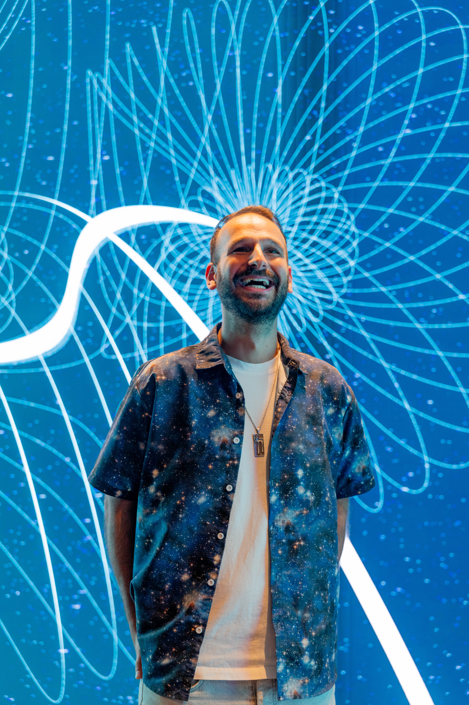
My work combines observational radio astronomy with large-scale data analysis. I use widefield surveys and targeted follow-up observations to discover and understand sources that change over time.
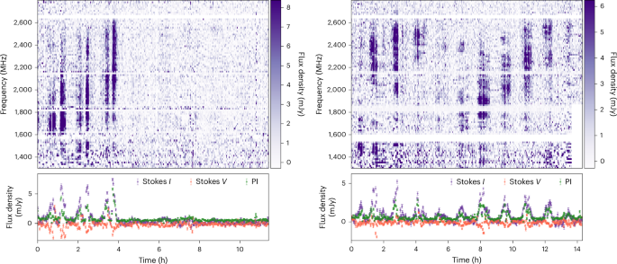
Radio bursts from ASKAP J1745-5051, the accreting white dwarf binary at the centre of our 2026 Nature Astronomy study.
Investigating mysterious, repeating radio bursts and their physical origins, including the link between long-period transients and accreting white dwarf binaries.
Read the Nature Astronomy paper ↗Using polarised radio emission to find dwarf stars and probe their magnetic environments, including periodic radio pulses from the T8 dwarf WISE J0623.
Read the discovery paper ↗Searching for supernovae that brighten again at radio wavelengths years after explosion, revealing the material surrounding the star and its history of mass loss.
Read the VAST study ↗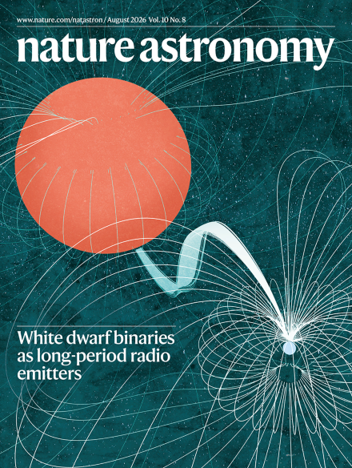
Our white dwarf binary research features on the cover of Volume 10, Issue 8.
Image: Carl Knox (OzGrav / Swinburne) and Joshua Preston Pritchard (CSIRO). Cover design: Bethany Vukomanovic.
Explore the issue ↗Discovery papers, survey science and collaborative studies of the radio sky.
Rose, K., Pritchard, J., Murphy, T., et al. · Nature Astronomy, 10, 1166
First authorWang, Z., et al. (including Rose, K.) · Nature, 642
Rose, K., Horesh, A., Murphy, T., Kaplan, D. L., et al. · MNRAS, 534
First authorDriessen, L. N., et al. (including Rose, K.) · PASA, 41, e084
Chen, P., et al. (including Rose, K.) · Nature, 625
Rose, K., Pritchard, J., Murphy, T., Caleb, M., et al. · ApJL, 951, L43
First authorDuchesne, S. W., et al. (including Rose, K.) · PASA, 40, e034
Selected writing, interviews and broadcasts bringing astronomy to a wider audience.
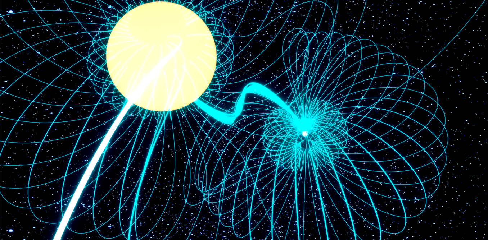
The story behind our discovery of an accreting white dwarf binary.
Article · Written by KoviImage: Carl Knox (OzGrav / Swinburne) & Joshua Preston Pritchard (CSIRO), via The Conversation.
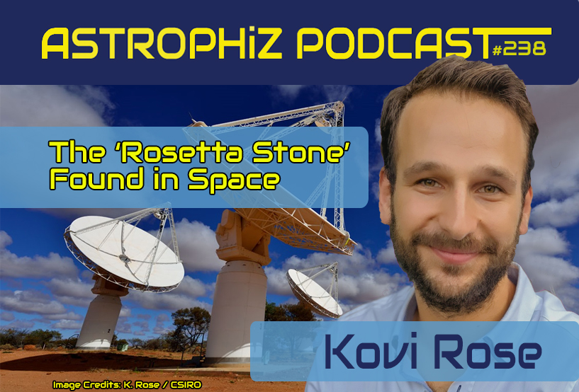
A conversation about the search for unusual radio signals and what they reveal.
Podcast · Guest interviewEpisode artwork: Astrophiz
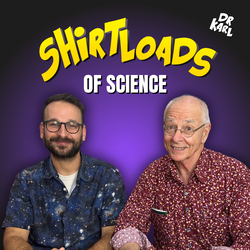
Discussing the discovery of the cosmic ‘Rosetta stone’ on Dr Karl’s podcast.
Podcast · Guest interviewEpisode artwork: Shirtloads of Science.
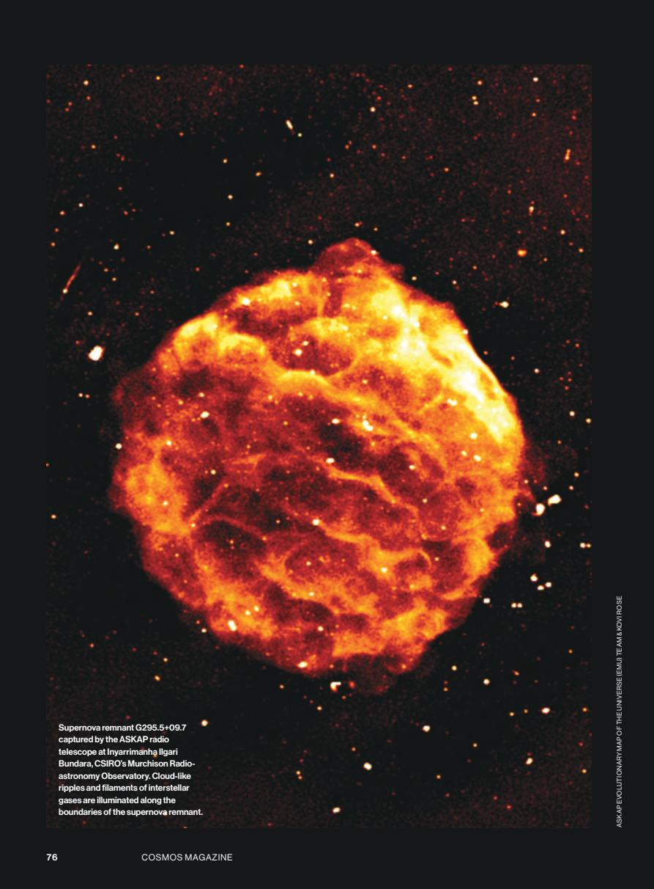
Exploring the astronomical stories that continue after a star’s death. Read the saved issue, beginning on page 76.
Article · Written by KoviImage: ASKAP EMU team & Kovi Rose / Cosmos, issue 107.
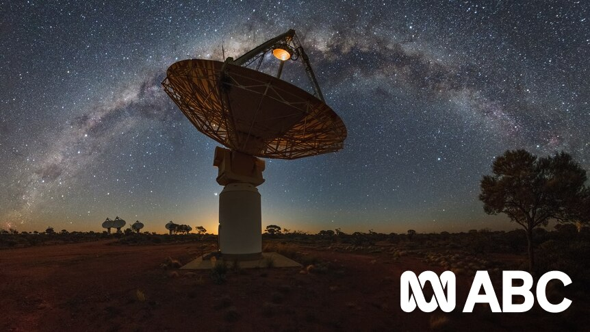
An appearance on The Science Show about these faint and fascinating objects.
Radio · The Science ShowImage: CSIRO’s ASKAP, via ABC Radio National.
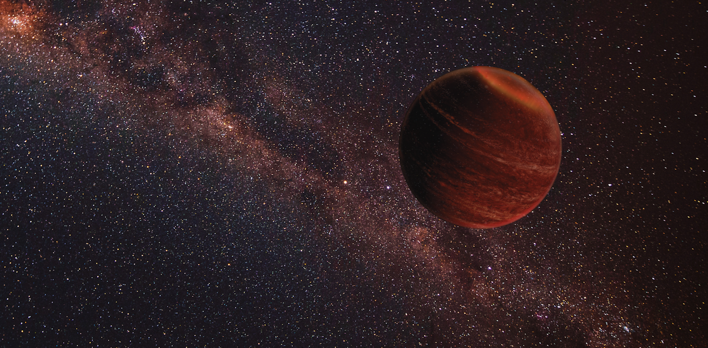
How we detected radio waves from an exceptionally cool brown dwarf.
Article · Written by KoviComposite: Chuck Carter / Gregg Hallinan (Caltech) and Philippe Donn (Pexels), via The Conversation.
I share science through writing, podcasts, school visits, public talks and the occasional comedy stage — making space for questions, wonder and a good laugh.
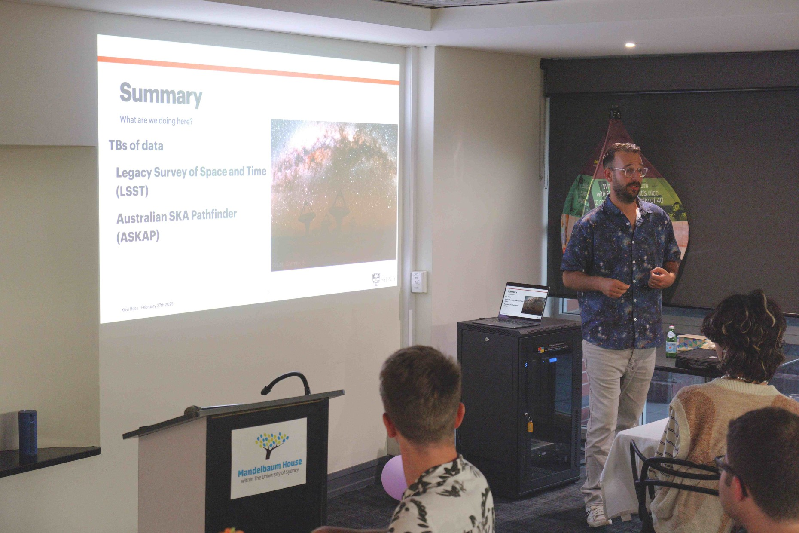
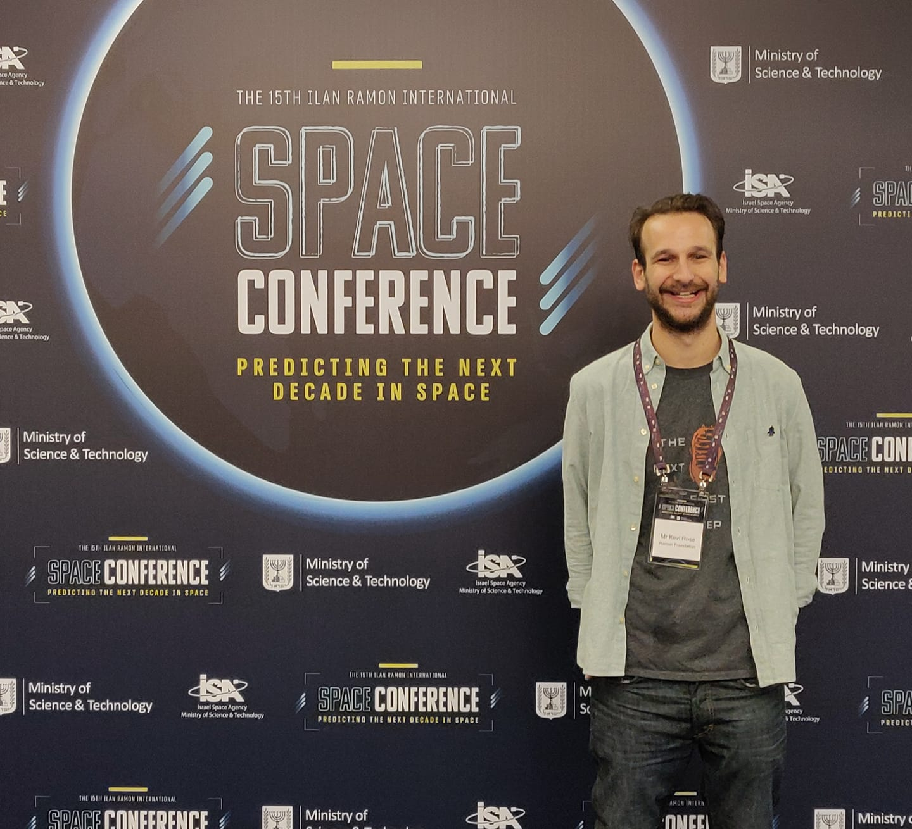
I founded and edit Fun Fact Science, sharing science with a community of around 75,000 followers through accessible stories and conversations.
Visit Fun Fact Science ↗Photo: Fun Fact Science · Ilan Ramon International Space Conference.
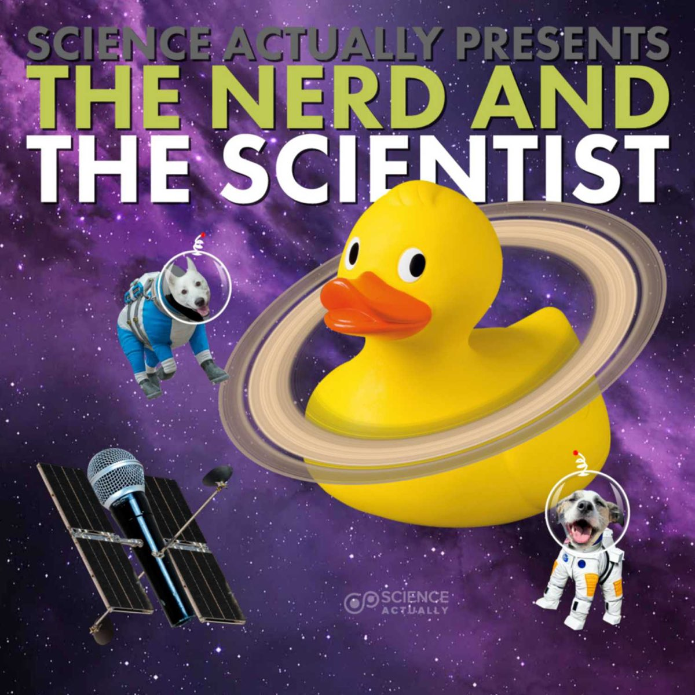
I co-host The Nerd and the Scientist with Benjamin Salles, exploring science and space with curiosity and humour. My podcasting also includes The Space Case Sarah Show.
Listen to the podcast ↗Artwork © Science, Actually.
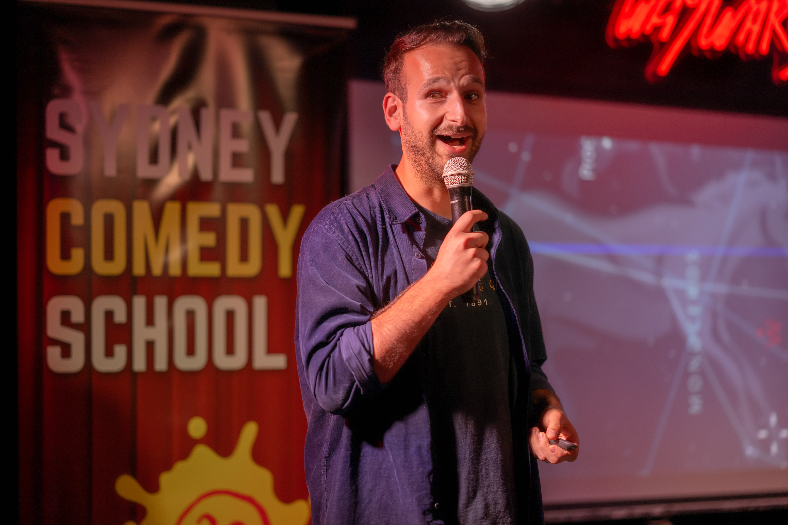
My public appearances include Pint of Science, Physics in the Pub, National Science Week, astronomy societies, and science comedy at the Sydney and Adelaide Fringe festivals.
Pint of Science ↗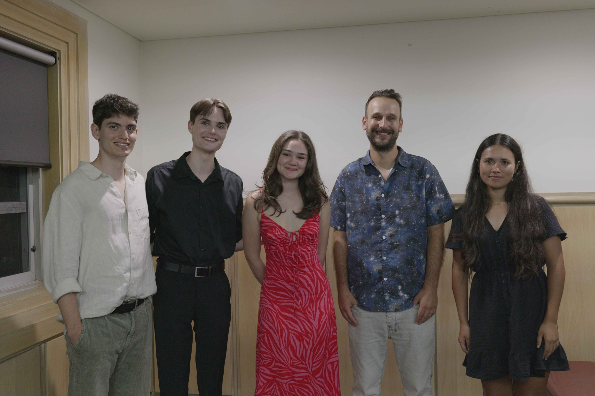
I visit schools, participate in Skype a Scientist, and mentor through the Science Extension Mentoring Program. I have taught physics, astronomy and data science, from school classrooms to university courses.
Science Extension program ↗Pictured with Mandelbaum House residents. Photos: Andrew Montoni-Tiller and Yotam Kiper / Mandelbaum House.